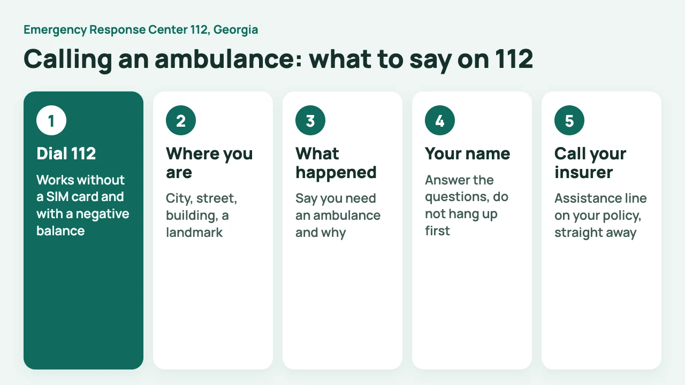
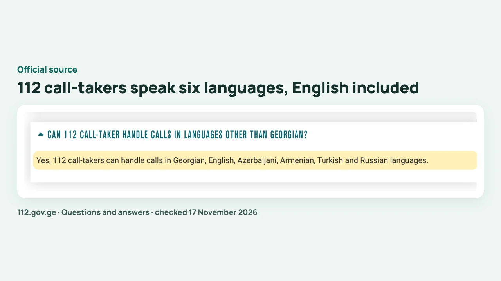
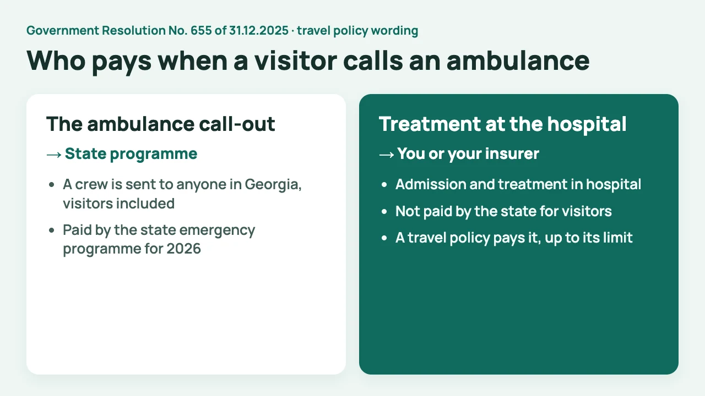

This page is about Georgia the country — Tbilisi, Batumi and the mountains — not the US state. It is part of our guide to healthcare in Georgia. Checked on 17 November 2026.
How to call an ambulance in Georgia: dial 112
Dial 112 and, when someone answers, say "ambulance". The same number covers police, fire and rescue and the Emergency Medical Service, according to the official service site.
You do not need a SIM card. If someone is with you, let them make the call while you stay with the patient. Speak slowly and say clearly where you are, so the crew knows where to go.

What to tell the operator
Four things: where you are, what happened, which service you need, and your name and surname. Stay on the line until the conversation is over, and remember that calls are recorded.
Addresses are the hard part for visitors. Save the address of your hotel or guesthouse in Latin letters on your phone, with a landmark nearby. Then you can read it out instead of spelling it under stress.
Does the operator speak English?
Yes. The official questions and answers page says that call-takers "can handle calls in Georgian, English, Azerbaijani, Armenian, Turkish and Russian languages" (FAQ on the service site). The same page says calls are received 24/7 throughout the whole country.
Some travel guides and AI summaries mention only English and Russian. There are six, so start in the one you speak best.

No SIM card, no credit on the phone or can't talk: the 112 Georgia app
You can still get through. The number works from a mobile phone without a SIM card, and from a landline without dialling a code, even with a negative balance.
If you cannot speak, or the line is too noisy, use the 112 Georgia app (official page). It offers a call that sends your geolocation, a chat with a dispatcher and a silent SOS alarm. Its interface comes in five languages, English and Russian among them. Install it before the trip, while you have Wi-Fi and time to set it up.
What happens after you call 112
The service takes the call, and the Emergency Situations Coordination and Urgent Assistance Center under the Ministry of Health sends the ambulance crew. This has been the set-up since August 2020, according to the EU Asylum Agency's MedCOI report on healthcare (2025).
The same report gives an average arrival time of 30–40 minutes, according to 2021–2022 data, with 78 stations and 333 crews in 2022.
While you wait:
- keep your phone switched on and within reach;
- send someone outside to meet the paramedics, if you can;
- put the patient's passport and policy number by the door.

Who pays for the ambulance and the hospital
The state pays for the ambulance call-out for anyone in Georgia, visitors included. Inpatient admission and treatment of a tourist are not paid for by the state. This follows from Government Resolution No. 655 of 31 December 2025, Annex 18.1 (Resolution No. 655 on matsne.gov.ge, Georgian text).
So the bill for the hospital stay and treatment lands on you or on your policy. That is why the entry rule matters. Since 1 January 2026, foreigners must enter with health and accident insurance of 30,000 GEL for the whole stay (Resolution No. 602 on matsne.gov.ge, Georgian text). Our guide explains the 2026 entry insurance rule in more detail.
If you are still choosing a policy, look for travel insurance for Georgia that covers emergency hospital care. On the Light plan it costs from €0.78 (2.22 GEL, ≈ $0.86) a day on a 360-day policy; a 3-day policy is €6.27 (17.90 GEL, ≈ $6.90), at the National Bank rate of 17 November 2026.

Do visitors pay when the ambulance comes?
Not for the call-out: the state programme covers it. Many websites and AI answers say there is nothing to pay and stop there. That is true only of the crew's visit. Admission and treatment in hospital are not covered for a visitor, so you pay for them, or your policy does.
If you are taken in for treatment: call your insurer straight away
Phone the assistance line on your policy from the ward or reception, or ask someone to do it if the patient cannot. Policies set a deadline for this.
For example, on an IRAO travel policy the deadline is 24 hours, and the assistance line, +995 32 2 949 949, works around the clock. According to the IRAO policy wording, within the overall limit of 30,000 GEL it covers:
- ambulance, emergency inpatient and outpatient care — unlimited within that limit;
- medicines for outpatient treatment of an acute case — up to 2,000 GEL;
- urgent dental care — up to 2,000 GEL;
- an interpreter — up to 1,000 GEL;
- for travellers aged 65 and over, the policy reimburses 50% of costs.
There is no deductible on any of its tariffs. Keep your passport and policy number at hand, ideally as photos on your phone. Step by step: how to report a medical case to the insurer.
No policy yet and already in the country? You can buy one online, and it is valid from the moment you pay.

Frequently asked questions
Does 112 speak English?
Yes. Call-takers handle calls in Georgian, English, Azerbaijani, Armenian, Turkish and Russian.
What is 112 used for?
For police, fire and rescue, and medical help. One number reaches all three services.
Do visitors pay for the ambulance call-out?
No. Under Government Resolution No. 655, the state pays for the call-out for anyone in the country, visitors included.
Do visitors pay for hospital treatment in Georgia?
Yes, unless a policy pays. The state does not cover admission or treatment for visitors, and since 1 January 2026 foreigners must enter with a policy of 30,000 GEL.
Can I call 112 without a SIM card?
Yes. It works from a mobile phone without a SIM card, and from a landline without a code, even with a negative balance.
Sources
- Official service site: services covered and what to say on a call
- Official service site: questions and answers — languages, calls without a SIM card
- Official service site: calls from landlines
- Official service site: call, chat and silent SOS from a smartphone
- Government Resolution No. 655 of 31 December 2025, Annex 18.1 (Matsne, Georgian text)
- Government Resolution No. 602 of 26 December 2025 (Matsne, Georgian text)
- EU Asylum Agency, MedCOI report: provision of healthcare, 2025 (data for 2021–2022)